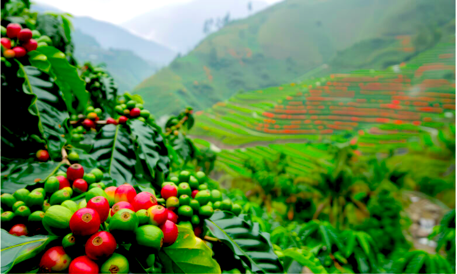

About Our Plantation
Green Hills Coffee Plantation grows quality coffee using careful farming practices. Visitors can learn about coffee cultivation, harvesting and processing.
Coffee Varieties
- Arabica
- Robusta
- Batian
- Ruiru 11
Coffee Production Process
- Planting coffee seedlings
- Maintaining and pruning coffee bushes
- Harvesting ripe coffee cherries
- Drying and processing the beans
- Packaging the processed coffee
Plantation Activities
- Pruning
- Removing selected branches to improve plant growth and productivity.
- Harvesting
- Picking ripe coffee cherries from the coffee bushes.
- Drying
- Reducing moisture in processed coffee beans before storage.